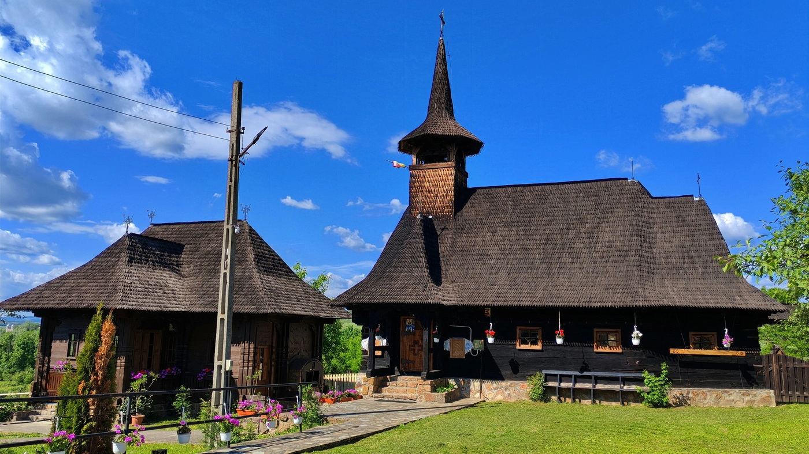

Satul Brătești aparține comunei Răbăgani din județul Bihor, într-un ținut de dealuri aflat în apropierea Beiușului. Aici se găsește biserica de lemn cu hramul „Sfântul Teodor Tiron”, unul dintre monumentele care păstrează amintirea arhitecturii tradiționale din Țara Beiușului.
Biserica amintește de meșteșugul construirii în lemn și de rolul pe care lăcașurile de cult l-au avut în viața comunităților din Bihor. Chiar și astăzi, locul rămâne important pentru localnici: în fiecare duminică se slujește aici.
Repere esențiale
Localitate
Brătești, comuna Răbăgani
Județ
Bihor, Țara Beiușului
Hram
Sfântul Teodor Tiron
Datare
Secolul al XVIII-lea
Cod monument
BH-II-m-B-01122
Slujbe
În fiecare duminică
Istoric și arhitectură
Istoria bisericii, pas cu pas
De la ridicarea ei în secolul al XVIII-lea, până la mutarea și restaurarea care au păstrat-o pentru generațiile următoare.
Sec. XVIII
Construcția
Biserica de lemn a fost construită în secolul al XVIII-lea și se afla inițial în satul Sitani, județul Bihor. Sursele consultate indică ani diferiți pentru construcție (1718, 1738 și 1740), de aceea datarea este prezentată la nivel de secol.
1976–1978
Mutarea la Brătești
În perioada 1976–1978, biserica a fost mutată din Sitani și reconstruită la Brătești, unde se află și astăzi. Mutarea a salvat monumentul și i-a oferit o nouă comunitate.
2009
Restaurarea
În 2009, la cererea Parohiei Ortodoxe Brătești, arhitectul orădean Cristian Pușcaș a realizat proiectul de restaurare. Lucrările au schimbat șarpanta și învelitoarea, readucând biserica mai aproape de imaginea inițială.
Biserica de lemn din Brătești
Capitolul II
Biserica de lemn „Sfântul Teodor Tiron”
Biserica de lemn din Brătești este un monument istoric al comunei Răbăgani. A fost construită în secolul al XVIII-lea* și se afla inițial în satul Sitani. În perioada 1976–1978 a fost mutată la Brătești, unde se află și acum. Este și azi o biserică vie: în fiecare duminică se slujește aici.
* Notă istorică: sursele consultate indică ani diferiți pentru construcție (1718, 1738 și 1740); de aceea folosim datarea în secolul al XVIII-lea.
— 14 —
Țara Beiușului · Bihor

Fig. 1. Biserica de lemn „Sfântul Teodor Tiron”, Brătești
Clădirea se remarcă prin pereții din bârne de lemn, acoperișul înalt și turnul-clopotniță cu vârf ascuțit. Bârnele sunt așezate orizontal și se întâlnesc la colțuri prin îmbinări specifice tâmplăriei tradiționale. Aceste detalii arată priceperea meșterilor care ridicau biserici fără materialele moderne de construcție.
Interiorul păstrează spațiile tradiționale ale bisericii ortodoxe, iar pictura, iconostasul și icoanele dau lăcașului atmosfera lui specifică. Fotografiile din galerie arată aceste detalii.
În 2009, la cererea Parohiei Ortodoxe Brătești, arhitectul orădean Cristian Pușcaș a realizat proiectul de restaurare, care a schimbat șarpanta și învelitoarea și a readus biserica la imaginea inițială. Biserica rămâne un reper al tradiției și memoriei locale.
— 15 —
Galerie foto
Imagini din exterior, interior și detalii
Un panou vizual despre Biserica de lemn „Sfântul Teodor Tiron” din Brătești, unde fotografiile și notițele scurte se leagă firesc între ele.
Fotografii: autorul proiectului. Imaginile preluate din alte surse sunt atribuite în „Surse folosite”, din subsolul paginii.
Hartă interactivă
Găsește biserica din Brătești
Explorează locația bisericii și alte puncte importante din zona Țării Beiușului.
Harta necesită conexiune la internet. Lista de locuri rămâne disponibilă mai jos.
Locuri pe hartă
Quiz
Verifică ce ai descoperit
Răspunde la întrebările despre biserica de lemn „Sfântul Teodor Tiron” din Brătești.
Rezultat final
Contact
Trimite un mesaj
Ai fotografii sau informații despre o biserică de lemn? Scrie-ne un mesaj.